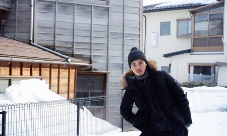

18-02-18
159
浏览
· 3
回复
2/17/2018 六
2016年的元旦第一次踏上了日本的北海道，满足了自己三十多年来第一次身临其境在雪乡的梦幻之旅。对于一个南方人来说，一片雪花就可以唤起自己内心深处隐藏的童心，也就从此爱上了日本。
人生最美的事也许就是夏天陪你去看海，冬天陪我去看雪

本想着再一次踏上北海道之行，你说这次换一条线路吧，去寻觅另一场雪。于是就有了此次之行，满心期待，终于在2018年的正月初二开启了我们新一年的旅程！✌️
我们的飞行时间是从广州白云机场下午14:00出发，不过delay了40分钟，所以到达上海浦东机场已经是下午16:40了，下了飞机之后有机场专门的工作人员带领我们飞往名古屋的旅客一起过海关，时间很紧迫，17:20就已经开始登机，18:00起飞🛫️-所以我们过完海关安检已经离起飞时间没多少了！（办事效率太差）过个海关安检，一堆工作人员守着一台机，然后慢吞吞的干活！差评！